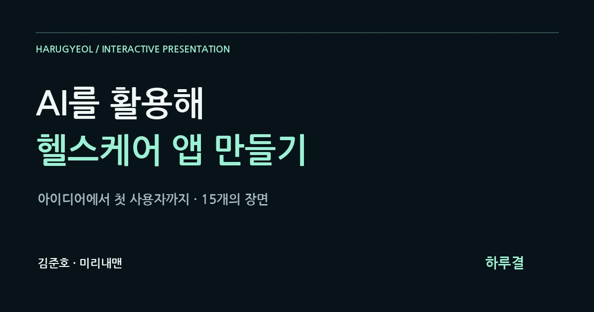

AI를 활용해 헬스케어 앱 만들기 — 하루결
한 사람의 더 나은 하루를 위해 사용자 정의부터 화면·데이터 설계와 검증까지 AI와 함께 앱을 만드는 과정을 15장으로 경험합니다.
기획·제작 · 김준호 · 미리내맨

한 사람의 더 나은 하루에서 시작하기
AI를 활용해 헬스케어 앱을 만드는 과정을 웹 프레젠테이션으로 설명하는 실험에서 출발했습니다.
가상 생활 기록 앱 하루결을 통해 아이디어가 사용자 경험과 화면 그리고 데이터로 구체화되는 순서를 따라갑니다.
직접 움직이며 보는 발표
15장의 장면을 방향키·스크롤·진행바로 이동합니다.
수면·걸음·컨디션을 바꾸고 저장하는 가상 시연과 첫 사용·잘못된 입력·저장 실패 상황을 비교하는 예제가 포함됩니다.
효과음은 발표자가 직접 켤 수 있습니다.
애니메이션 다음에 남는 것은 레이아웃
제작자는 애니메이션이 끝난 뒤 남는 기본 레이아웃을 우선했습니다.
좌우 균형과 패널의 높이·정렬을 먼저 고친 뒤 화면 전환을 다듬었습니다.
도착할 때 추가한 타격음과 잔향은 어색하다는 피드백에 따라 제거하고 전환음은 유지했습니다.
15장의 발표 내용
- 내 건강을 위한 앱
아이디어에서 첫 사용자까지의 제작 흐름을 소개합니다.
- 불편 발견
흩어진 기록처럼 반복되는 일상의 불편을 찾습니다.
- 사용자 정의
한 사람의 상황·불편·원하는 변화를 구체화합니다.
- AI와 사람의 역할
AI의 구현 지원과 사람의 판단·검증을 구분합니다.
- 아이디어 명세
무엇을 어떻게 어디까지 만들지 한 문장으로 정합니다.
- 첫 버전 범위
기록·조회·주간 흐름에 집중합니다.
- 사용자 흐름
입력부터 저장과 돌아보기까지의 순서를 설계합니다.
- 화면 구현
정보의 구조가 실제 인터페이스로 바뀌는 과정을 봅니다.
- 데이터 저장
사용자·날짜·수면·걸음·컨디션을 기록으로 연결합니다.
- AI에게 요청하기
사용자와 입력 조건 및 제외 범위까지 요청에 담습니다.
- 직접 눌러보기
가상 앱에서 입력을 바꾸고 저장과 조회를 시연합니다.
- 앱 안의 AI
선택한 기록을 관찰·근거·질문으로 정리하는 역할을 다룹니다.
- 데이터와 신뢰
사용자의 허용과 기록 접근 및 처리 범위를 살핍니다.
- 검증과 개선
빈 기록·잘못된 입력·저장 실패를 확인합니다.
- 첫 사용자
작게 배포하고 실제 경험을 관찰하며 개선합니다.
하루결은 교육을 위한 가상 앱입니다.
화면의 수치와 AI 응답은 예시이며 실제 의료 서비스·진단 도구 또는 완성된 상용 앱을 소개하는 페이지가 아닙니다.
이어지는 작품
Coding is the Body of the Message
코딩을 메시지가 작동하는 몸으로 보는 강의 관점이 이 발표에서는 생활 기록 앱의 제작 흐름으로 구체화됩니다.
Coding is the Body of the Message 열기 ↗
말에 몸을 입히다
함축·여백·전환으로 메시지를 전달하는 웹 슬라이드 탐구가 이 발표의 레이아웃과 전환 연출로 이어집니다.